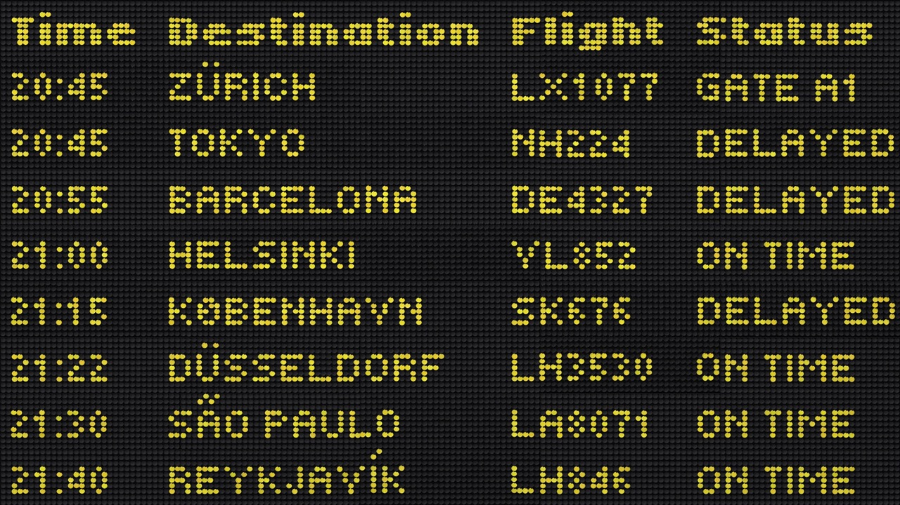
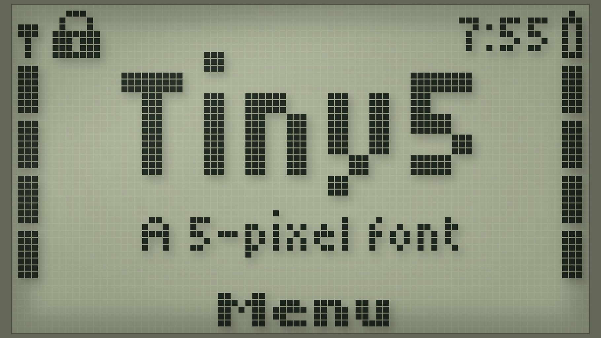
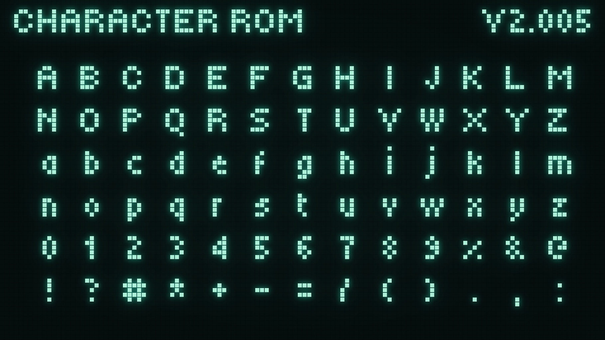
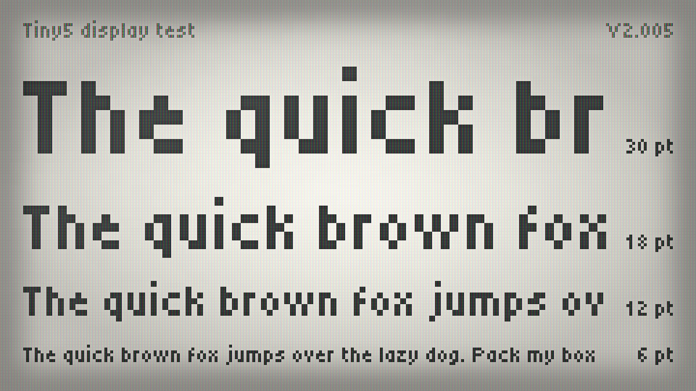
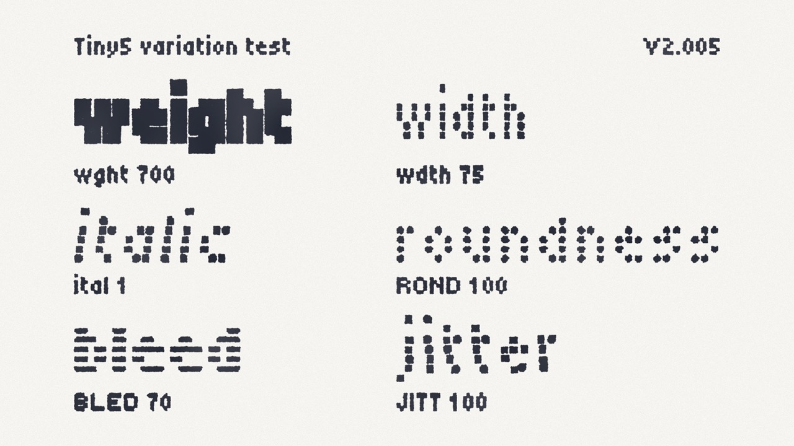
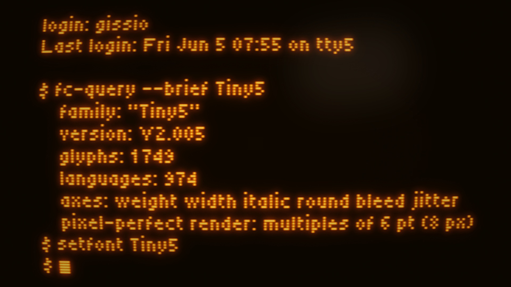
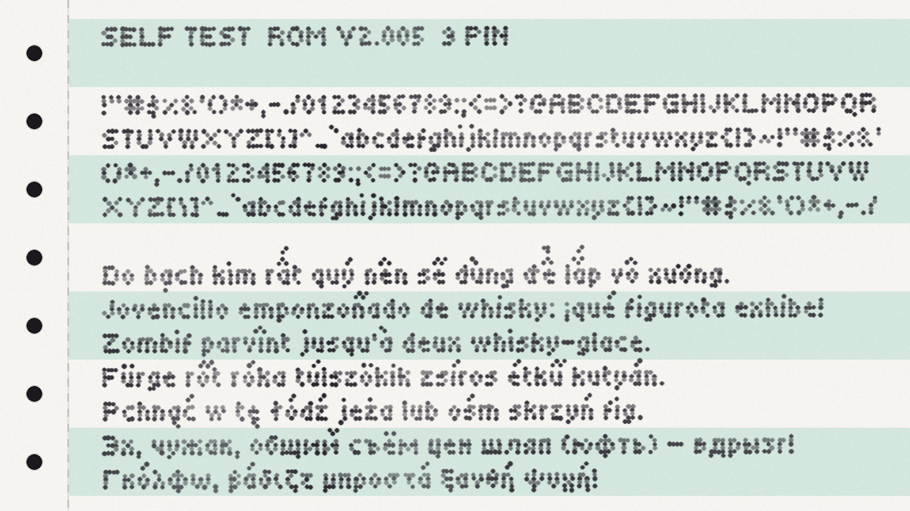

Tiny5 Duo is the bolder sibling of Tiny5, bringing extra presence to its compact 5-pixel aesthetic while preserving the charm and precision of 1980s–90s digital minimalism.
To contribute, see github.com/Gissio/font_tiny5.
Inspired by graphing calculators, pocket gadgets, LCD displays and early digital interfaces, Tiny5 Duo turns ultra-small letterforms into a distinctive typographic voice. Its heavier construction gives text more impact and visibility, while staying faithful to the crisp, pixel-perfect character of the original Tiny5.

Like Tiny5, the family offers six variable axes — Weight, Width, Italic, Roundness, Bleed and Jitter — allowing you to move effortlessly between sharp geometric forms, chunky LCD lettering, soft CRT-like shapes, dot-matrix textures and deliberately imperfect digital artifacts.
Tiny5 Duo is particularly suited to moments that need a little more typographic weight:
The Tiny5 family supports Latin, Greek, Cyrillic and Armenian scripts, covering 974 languages with 1,749 glyphs.
For pixel-perfect results, use font sizes in 6 pt (8 px) increments.





